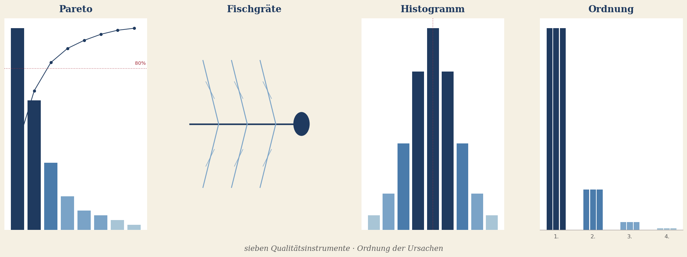
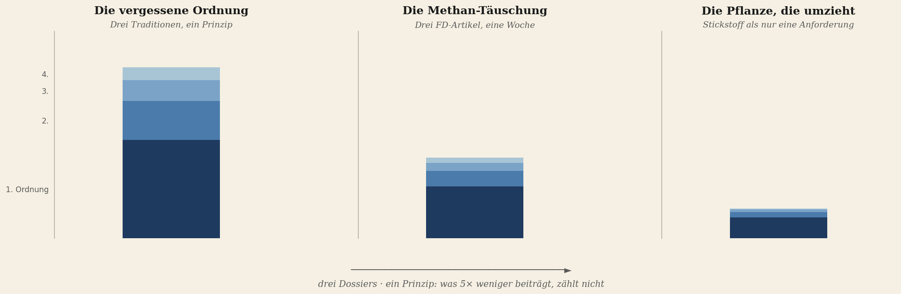
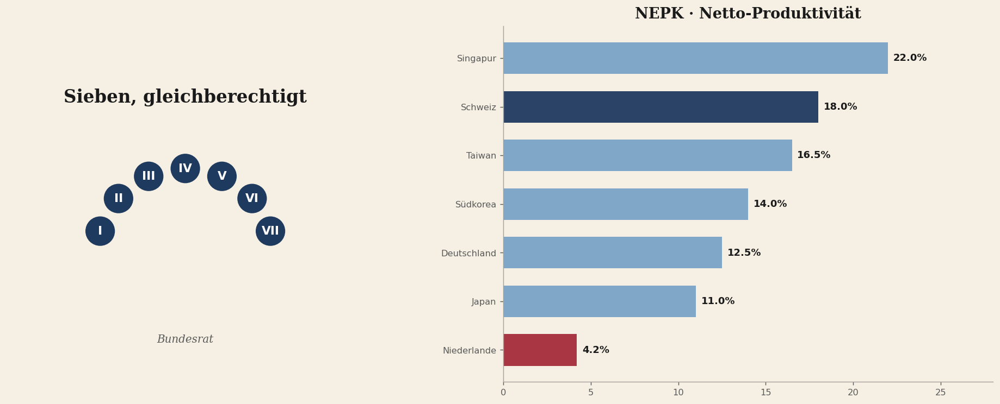
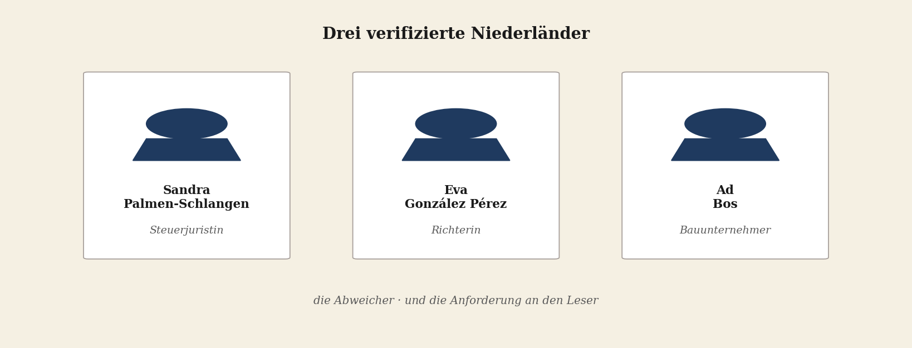

Diese Ausgabe hat einen Rhythmus. Vier Teile, die aufeinander aufbauen. Lesen Sie sie der Reihe nach — oder wählen Sie den Teil, der Sie anspricht. Jeder Artikel steht für sich.
Das Werkzeug
Die Grundlage — was ist Ordnung, woher kommt sie, und was hat sie in Geld für diejenigen erbracht, die sie nutzten.

Brief an den Leser
Diese Ausgabe liefert keine Meinung, sondern ein Werkzeug.
七つ道具 — Die Sieben, die den Unterschied machten
Kaoru Ishikawas sieben Qualitätsinstrumente plus die Ordnungsanalyse aus dem Stahlbau. Das Werkzeug, mit dem Japan uns überholt hat.
Die Erfolgsformel, die wir verlernt haben
Japan, Korea und China haben uns überholt, weil sie das Werkzeug angenommen haben, das wir weggeworfen haben.
Die Diagnose
Das Prinzip und zwei Dossiers — Methan und Stickstoff — in denen die Presse und die Politik das Gewicht falsch verteilen.

Die vergessene Ordnung
Drei Traditionen, ein Prinzip: was 5× kleiner beiträgt als der Hauptfaktor, zählt nicht mit.
Die Methan-Irreführung
Drei FD-Artikel in einer Woche, drei Umkehrungen der Schwere, vier Forderungen an die Presse.
Die Pflanze, die umzieht
Stickstoff, Trockenheit, Klimaverschiebung, Fragmentierung — und die Politik, die nur eine der vier sieht.
Die Antwort im Entwurf
Was ein Land hat, das den Entwurf richtig machte: die Schweiz seit 1848, mit Produktivitätsdaten aus einundzwanzig Ländern.

Die Menschen und die Aufgabe
Drei verifizierte Niederländer, die in einer ordnungsverkehrten Welt den Kompass bewahrt haben — und was Sie selbst tun können.
